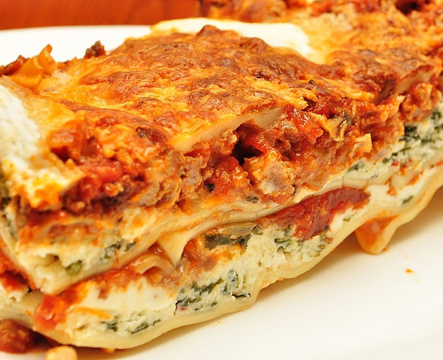

Lasagna

Description
This lasagna recipe may a little tedious, but it is so tasty that it will be worth it!
Preparation: 30 mins Cook Time: 2 hrs 30 mins Total Time: 3 hrs 15 mins Servings: 12
Ingredients
- Italian Sausage
- Ground Beef
- Onions
- Garlic
- 1 Can of Crushed Tomatoes
- 2 Cans of Tomato Sauce
- 2 Cans of Tomato Paste
- Seasoning and Spices (Parsley, Dried Basil Leaves, Salt, Italian Seasoning, Fennel Seeds, Black Pepper)
- Lasagna Noodles
- Cheese (Parmesan, Mozzarella, Ricotta)
- 1 Egg
Steps
- Make the meat sauce with the italian sausage and ground beef
- Cook the noodles
- Make the ricotta mixture and have cheese ready
- Layer the lasagna in the following order:
- Meat Sauce
- Noodles
- Ricotta Mixture
- Mozzarella Slices
- Meat Sauce
- Parmesan Cheese
- Repeat until near the top
- Finish the top with parmesan
- Cover with foil and bake
- Let the lasagna rest for about 15 minutes before serving